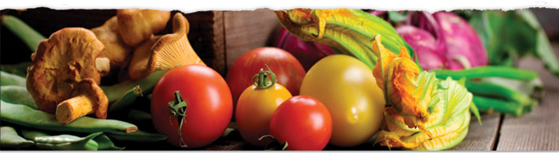

Bienvenu à Midi Délices Dinner dans un décor parfait La terrasse , en plein airUne présentation soignée
Riz cantonais : la vrai recette de cuisine chinoise !
plat : Riz cantonais
Le riz cantonais est le nom donné en France à un plat de riz frit, servi avec des lamelles de porc et des légumes mélangés, qu'on pense originaire de Canton Chine.
Listes des ingredients
300 g de riz cuit (pour 4 personnes)
100 g de maïs en grain
100 g de petits pois surgelés
50 g saucisse chinoise de canton (ou chorizo doux ou saucisse de Morteau)
2 œufs
1 carotte
1 c. à soupe d'huile de tournesol
2 ciboules ou oignons nouveaux
1 c. à soupe de sauce de soja
sel et poivre
Etapes de la recette
Epluchez la carotte, découpez en petits cubes ainsi que les ciboules (ou oignons)
Découpez les saucisses en petits cubes également (vous pouvez remplacer par des dés de poulet, des petites crevettes etc.) et faites
les revenir dans une poêle anti-adhésive avec l'huile quelques minutes
Ajoutez alors les carottes, laissez dorer 5 minutes en ajoutant la sauce soja
Ajoutez le riz déjà cuit, mélangez bien pour décoller les grains de riz
Ajoutez l'oignon (ou ciboule), le sel, et mélangez. Versez alors les oeufs battus sur le riz directement et mélangez pour que l'oeuf se
répartisse bien sur tout le riz, mélangez bien pour décoller les grains de riz à nouveau
Ajoutez enfin le maïs et les petits pois, poivrez et poursuivez la cuisson 2 minutes, c'est prêt !